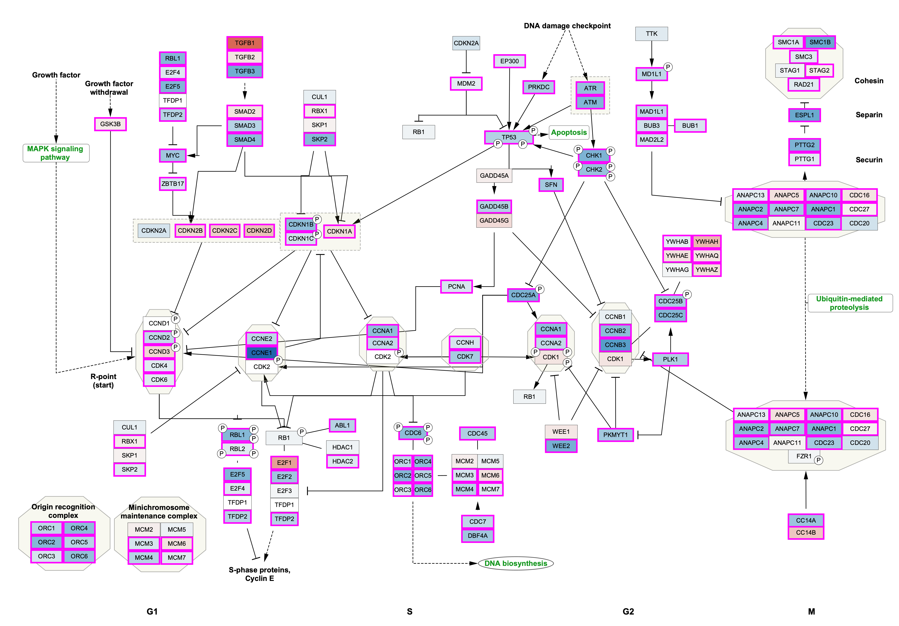

Visualizing experimental data on pathway models is a powerful way of interpreting and communicating findings in the context of biological processes, for integrating different modes of data in a single visualization and for downstream network analysis. Links to tutorials describing how to visualize data on WikiPathways models in Cytoscape and PathVisio are available below.

Cytoscape
WikiPathways models are available in Cytoscape via the WikiPathways app. For a tutorial describing three different use cases, see the Cytoscape WikiPathways App Tutorial.
PathVisio
PathVisio supports data visualization of WikiPathways models as described in the Data visualization in PathVisio Tutorial.